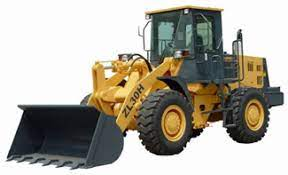
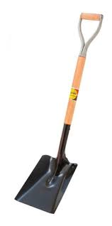
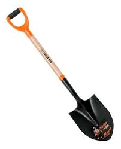
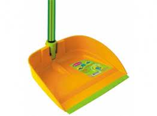
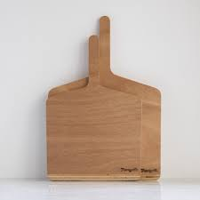

Tipos de Palas
En el mundo existen distintos tipos de palas (ninguno accesible a twitteros o similares) tales como:
Pala mecánica

Pala para la Construcción

Pala para Jardinería

Pala de Aseo

Pala para Hornos
